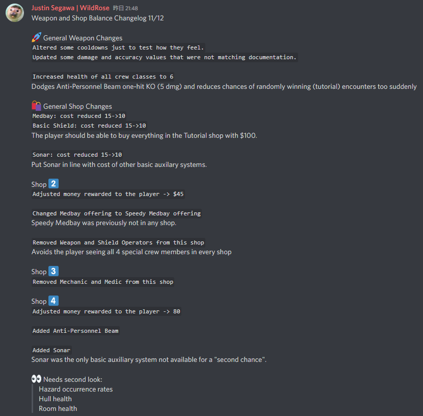
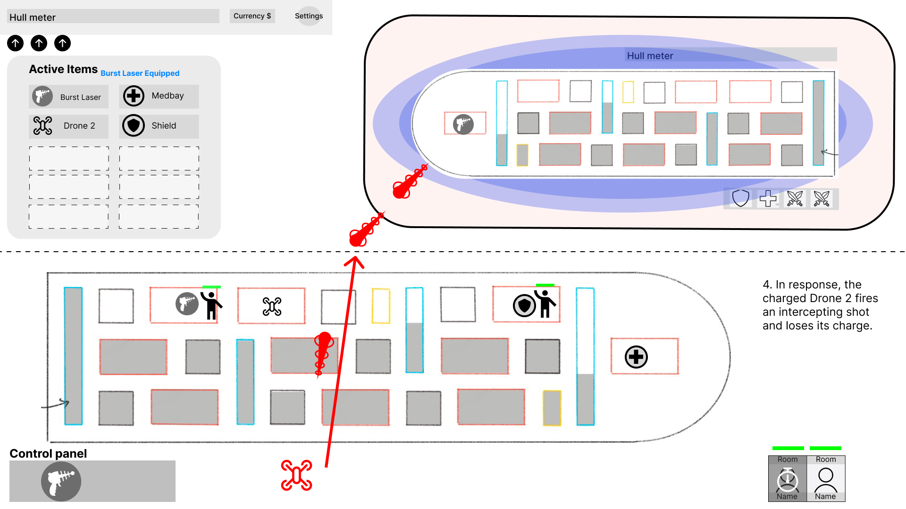

End of Sprint 3 and start of QA Sprint 4 (10/16/22 to 11/13/22)
Introduction
With the end of sprint 3, feature development concluded.
I spent most of this week in Unity balancing the game and overcame various hurdles.
Unity Trouble
While continuing live balancing on gameplay, I encountered some major bugs and obstacles. The programming team pushed many new features and
fixes throughout the sprint, but the game broke in multiple ways throughout the 2 weeks. Sometimes shields stopped functioning, or the player's
submarine would not appear in the shop at all, or some weapons simply did not function as intended. Thankfully, sometimes programmers quickly
responded to request for help/fixes, and otherwise I worked on organizing documentation or working on non-live balancing such as the prices and
offerings in shops. I did still spend a large chunk of time trying to get around bugs and live balance using workarounds
such as heading straight into combat encounters and skipping shops, although they were not very effective.
I felt pretty excited for my first "official" patch notes writeup, in the end:

Documentation work
For the rest of the week I worked on different documentation tasks. I revisited the mega spreadsheet with the statistical values of all in-game items
and matched them to the values in Unity (or vice versa, where appropriate). Drone systems had not received any documentation updates since the summer,
so I polished and remade the drone documentation.

For the first week of the QA sprint I plan on testing Drones as they are fully implemented in the game but have not been playtested or put in shops yet due to scope.
Otherwise I will be focus on bug reporting and continue balancing.
Approximate hours breakdown:
- Balancing weapon values
- Adjusting money gained in-game and shop offerings
- Working around bugs, trying out combat scenes only and alternative ways to test, learning how to generally navigate Unity better
- Updating mega spreadsheet of all in-game items
- Writing balance changelog
- Bug logging during playtests